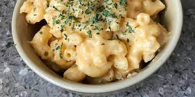

?
MAC AND CHEESE
Mac and Cheese

How to make?
Mac and cheese is simple dish with only a few ingredients but has a sublime and exquisite taste. It usually involves macaroni and a load ton of cheese which
this dish indeed divine.
- water
- butter
- salt
- pepper
- milk
- cheese
- Boil water and cook the pasta for about 8 minutes.
- Melt butter in a saucepan and add in flour, salt, and pepper until smooth for about 5 minutes.
- Pour milk into the mixture and stir until smooth and bubbling for about 5 minutes.
- Add cheese into the mixture until fully completed, for about 2-4 minutes.
- Prepare the pasta and sauce into a bowl and fold it until pasta is evenly coated.